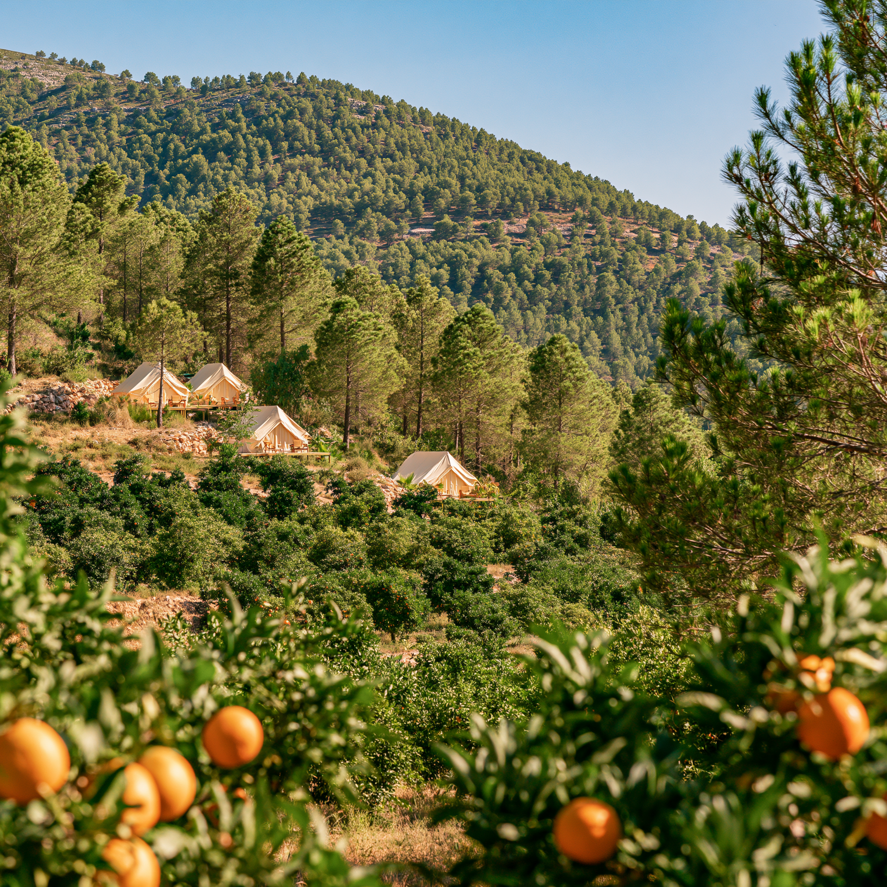

What Happens to an Orange Tree at 42°C
Heat stress, dropped fruit and what the grove has been teaching us this summer about resilience — and where it breaks.

What Going Organic Actually Means
I went into this thinking organic was mostly a marketing thing. Then I found a study. Then another. Then I couldn't stop.

We Bought a Farm. We'd Never Farmed.
For the last four years, every week, the gardeners came and shaped the bush beside the pool into a topiary spiral. An awkward shape for a plant.
From the archive
⛰
What Lives in the Rock: Geology, Water and Agriculture at Finca Tariqa
At the top of Puig Gros, the rock underfoot is the floor of a warm shallow sea. The full geological and agricultural report.
Read full report →